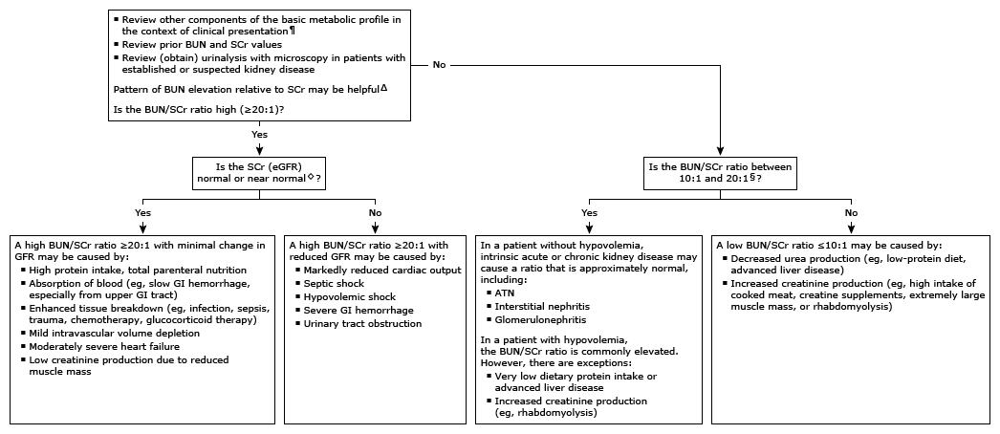

BUN: blood urea nitrogen; SCr: serum creatinine; eGFR: estimated glomerular filtration rate; GFR: glomerular filtration rate; GI: gastrointestinal; ATN: acute tubular necrosis; CKD-EPI: Chronic Kidney Disease Epidemiology Collaboration; MDRD: Modification of Diet in Renal Disease.
* The reference range for serum or plasma BUN ranges from 8 to 20 mg/dL. The BUN increases with age and with a high-protein diet. Interpretation of a specific abnormal result should be based upon the reference range reported with that result.
¶ The BUN has limited value as an index of GFR because rates of urea production and reabsorption are variable and independent of GFR. In patients with stable kidney function, the GFR should be estimated using equations (eg, CKD-EPI, MDRD) that depend on the SCr rather than the BUN. Refer to the Laboratory Interpretation monograph and algorithm on elevated SCr for further evaluation.
Δ In stable ambulatory patients with adequate dietary protein intake, the ratio of BUN to SCr (measured in mg/dL) is usually between 10:1 and 20:1. Deviations from this ratio suggest a variety of conditions associated with increased urea production, increased urea absorption, and decreased renal perfusion. Less commonly, an increased BUN/SCr ratio may be caused by decreased creatinine production due to low muscle mass; a reduced BUN/SCr ratio may be caused by increased creatinine production due to creatine supplements, an extremely high muscle mass, or a high intake of cooked meat.
◊ The BUN/SCr ratio is only approximate and has significant limitations, especially when there are conditions that determine the BUN and/or SCr concentrations independent of GFR or when kidney function is unstable. The SCr may be falsely interpreted as normal when there is reduced muscle mass or very low protein intake. In these circumstances, interpret high BUN as described for high BUN and reduced GFR.
§ In most circumstances, the BUN and SCr concentration vary inversely with the GFR, increasing as the GFR falls. When there is a proportional increase in both BUN and SCr, the BUN/SCr may be normal (approximately between 10:1 and 20:1, measured in mg/dL).